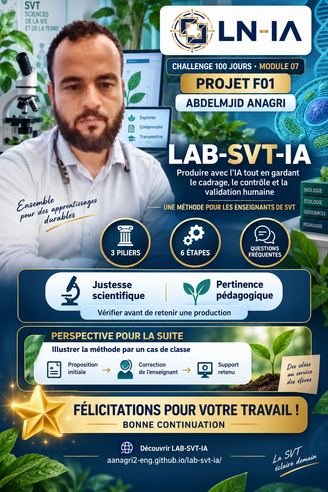
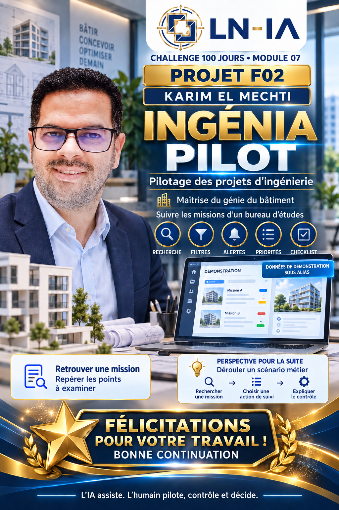
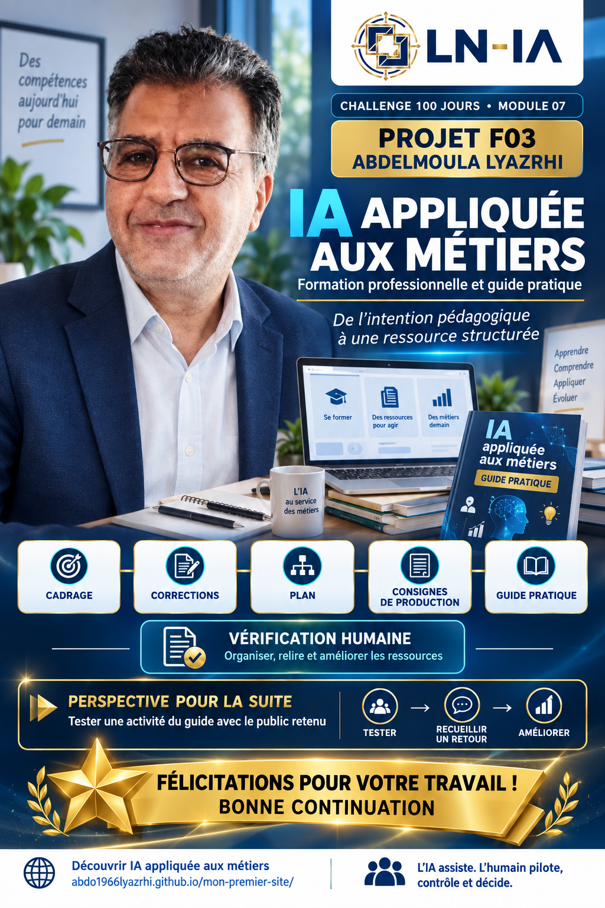
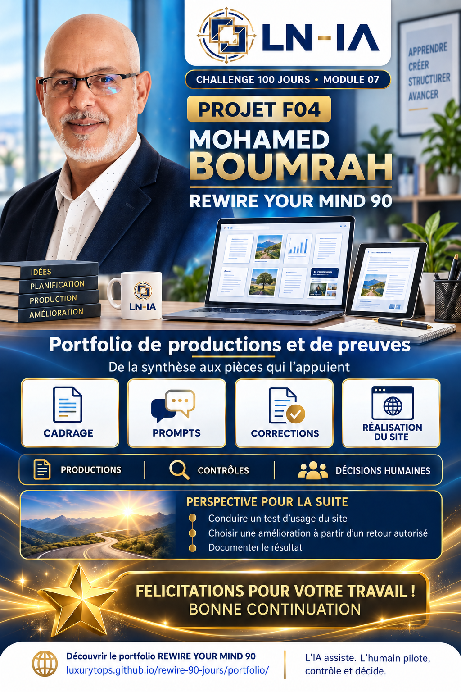

CHALLENGE 100 JOURS · LAB-NUMÉRIQUE-IA
Tous gagnants : regards sur les projets
Retour sur les productions · 7 septembre 2026
Bravo à toutes et à tous pour votre engagement dans le Challenge 100 Jours ! Vos projets donnent une forme concrète à une ambition commune : utiliser l’IA pour répondre à des besoins professionnels, tout en gardant la responsabilité des choix et du travail réalisé. Préparer un support, organiser une méthode, rendre ses preuves consultables : chacun apporte sa contribution à cette aventure collective.
Ce retour porte sur les productions que nous avons consultées. « Tous gagnants » exprime une reconnaissance collective de votre engagement et de vos progrès. Chaque parcours contribue à la réussite de ce temps d’apprentissage partagé.
Abdelmjid Anagri — LAB-SVT-IA

Agrandir l’affiche ↗Avec LAB-SVT-IA — Produire avec l’IA tout en gardant le cadrage, le contrôle et la validation humaine, Abdelmjid propose aux enseignants de SVT une méthode pour préparer leurs supports avec l’aide de l’IA. Le site organise les repères autour de trois piliers, de six étapes et de réponses aux questions fréquentes. Sa force est de rendre lisible une exigence essentielle : vérifier la justesse scientifique et la pertinence pédagogique avant de retenir une production. Une belle perspective pour la suite : illustrer cette méthode par un cas de classe, en montrant la proposition initiale, la correction de l’enseignant et le support retenu.
Karim El Mechti — INGÉNIA PILOT

Agrandir l’affiche ↗Avec INGÉNIA PILOT — Pilotage des projets d’ingénierie, Karim présente une démonstration de suivi des missions d’un bureau d’études. Recherche, filtres, alertes, priorités et checklist permettent d’explorer une organisation du travail à partir de données de démonstration sous alias. Sa force est de traduire un besoin de suivi professionnel en un parcours concret, où l’on peut retrouver une mission et repérer les points à examiner. Une belle perspective pour la suite : dérouler un scénario métier, depuis la recherche d’une mission jusqu’au choix d’une action de suivi, puis expliquer le contrôle effectué.
Abdelmoula Lyazrhi — IA appliquée aux métiers

Agrandir l’affiche ↗Avec IA appliquée aux métiers, Abdelmoula présente un projet de formation professionnelle accompagné d’un guide pratique. Les documents consultables relient le cadrage, les corrections, le plan, les consignes de production et le guide. Sa force est de rendre visible le chemin qui mène d’une intention pédagogique à une ressource structurée, en donnant une place explicite à la vérification humaine. Une belle perspective pour la suite : tester une activité du guide avec le public retenu, recueillir un retour et montrer l’amélioration apportée.
Mohamed Boumrah — REWIRE YOUR MIND 90

Agrandir l’affiche ↗Avec REWIRE YOUR MIND 90, Mohamed présente un portfolio de productions et de preuves qui retrace le développement de son projet. La galerie relie les documents de cadrage, les prompts, les corrections et les étapes de réalisation du site. Sa force est de permettre au lecteur de passer d’une synthèse aux pièces qui l’appuient, tout en distinguant les productions, les contrôles et les décisions humaines. Une belle perspective pour la suite : conduire un test d’usage du site, choisir une amélioration à partir d’un retour autorisé et en documenter le résultat.
Bravo Abdelmjid, Karim, Abdelmoula et Mohamed ! Merci de partager vos productions et les méthodes qui les accompagnent. Elles offrent au groupe des exemples concrets pour apprendre, poser des questions et poursuivre le travail ensemble.
L’IA propose. L’humain contrôle. Le livrable prouve.